The Lantern Keeper — demo 10 s (self-written test short, not a fact-checked story)
Camera idea: One unbroken walk. The camera walks with the keeper down the lantern row exactly once, never cutting: a single flowing dolly that starts wide behind him, drifts close as he lights each lantern, swings to the kid at the last lantern, and settles as the kid lights it. No cuts, no travel-spikes — the move itself is the story.
Each station shows the frame the camera ARRIVES at rest (START) and the last frame before it LEAVES (END). Captions are on. 9 stations, 309 frames, 10.3 s.
Take t1 · market
1 START · f 0 · 0.00 sCAMwhole · 24 mm · rest 0.3 s
MOVEkeeper: stand, standard
WORD(none) · shows lantern_last, kid
1 END · f 8 · 0.27 sCAMthen 0.7 s move to medium
MOVEkeeper: stand, standard
WORD(none) · shows lantern_last, kid
2 START · f 30 · 1.00 s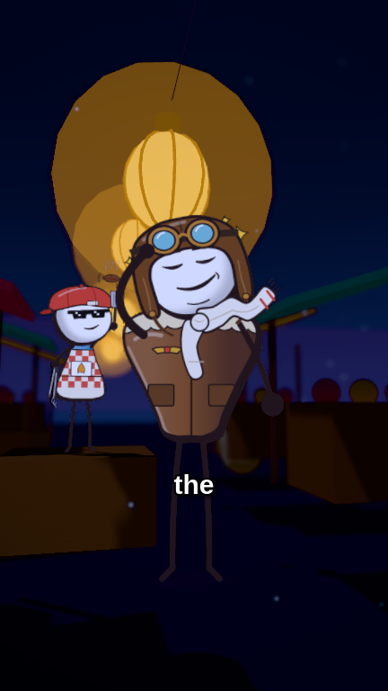
CAMmedium · 24 mm · rest 1.17 s
MOVEkeeper: stand, standard
WORD"lantern" · shows lantern_last
2 END · f 64 · 2.13 sCAMthen 0.7 s move to whole
MOVEkeeper: point_up, proud
WORD"lantern" · shows lantern_last
3 START · f 86 · 2.87 sCAMwhole · 24 mm · rest 0.27 s
MOVEkeeper: point_up, proud
WORD"one" · shows lantern_last
3 END · f 93 · 3.10 s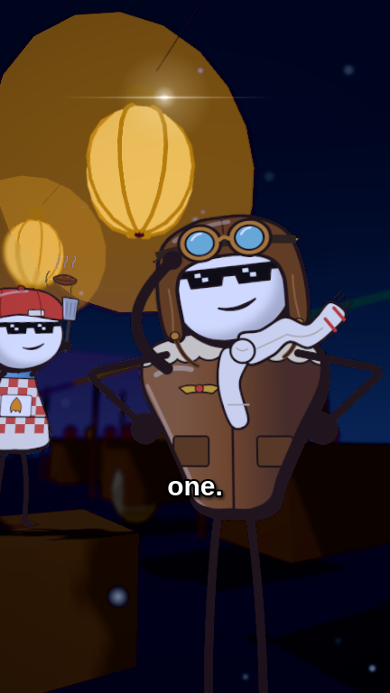
CAMthen 0.27 s move to medium
MOVEkeeper: hands_hips, cool
WORD"one" · shows lantern_last
4 START · f 102 · 3.40 s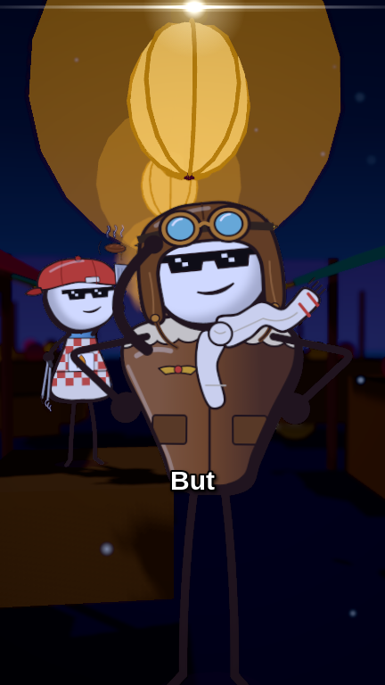
CAMmedium · 24 mm · rest 0.8 s
MOVEkeeper: hands_hips, cool
WORD"tonight"
4 END · f 125 · 4.17 s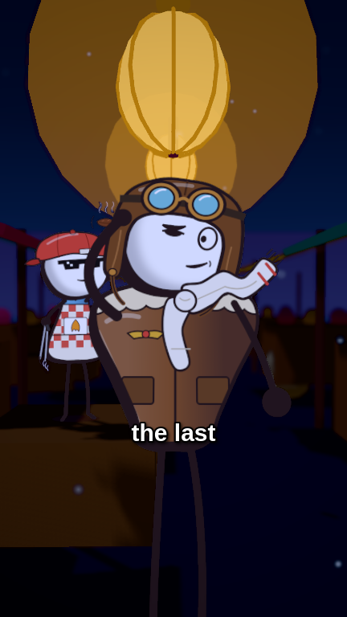
CAMthen 0.6 s move to close
MOVEkeeper: stand, sus
WORD"tonight"
5 START · f 144 · 4.80 s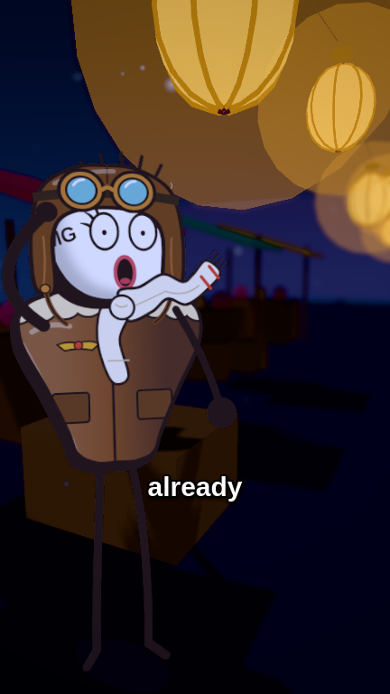
CAMclose · 24 mm · rest 0.63 s
MOVEkeeper: stand, omg
WORD"already" · shows lantern_last
5 END · f 162 · 5.40 s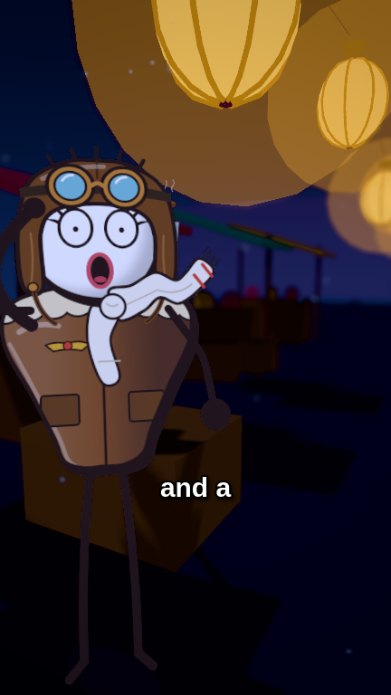
CAMthen 0.4 s move to medium
MOVEkeeper: point_out, omg
WORD"already" · shows lantern_last
6 START · f 175 · 5.83 s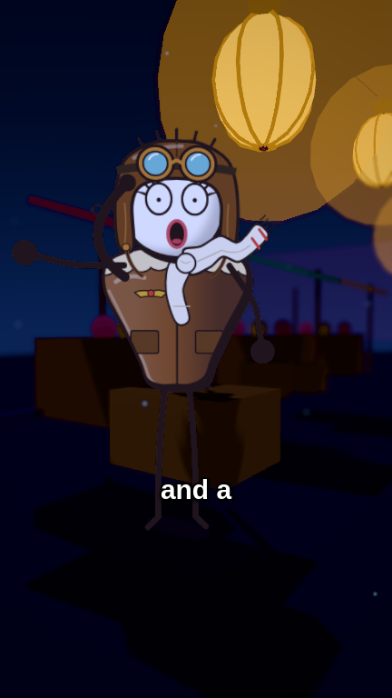
CAMmedium · 24 mm · rest 0.3 s
MOVEkid: stand, standard
WORD"small" · shows lantern_last, match
6 END · f 183 · 6.10 s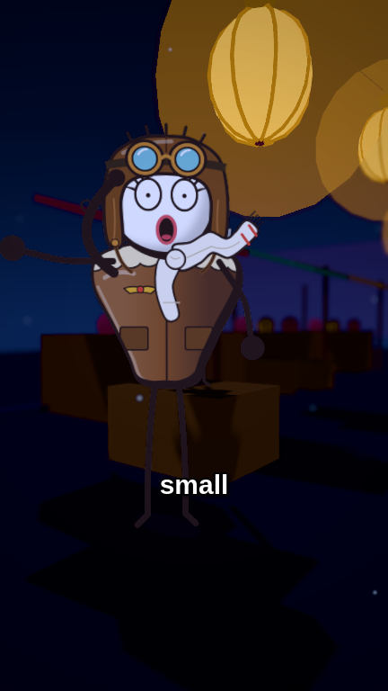
CAMthen 0.27 s move to medium
MOVEkid: finger_up, cool
WORD"small" · shows lantern_last, match
7 START · f 192 · 6.40 s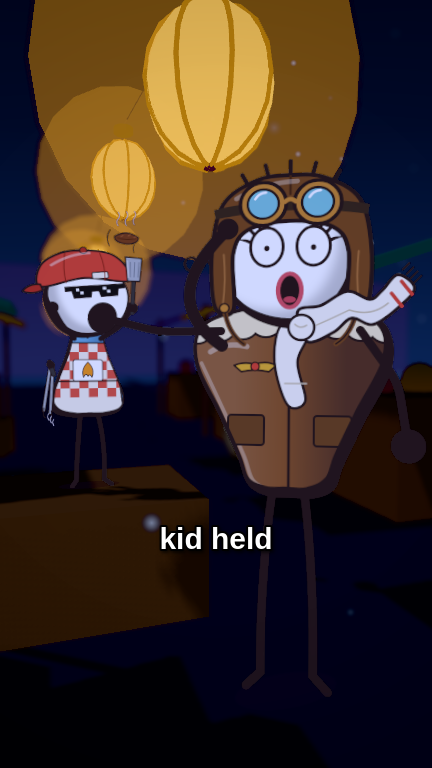
CAMmedium · 24 mm · rest 0.63 s
MOVEkid: finger_up, cool
WORD"held" · shows match, lantern_last
7 END · f 210 · 7.00 s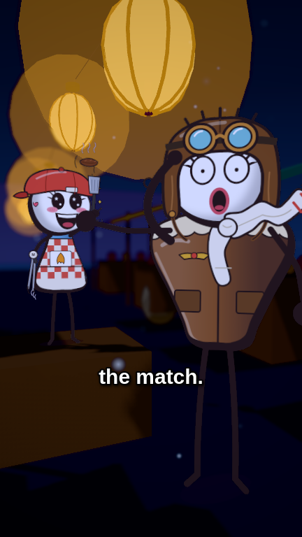
CAMthen 0.7 s move to whole
MOVEkid: point_up, fangirl
WORD"held" · shows match, lantern_last
8 START · f 232 · 7.73 s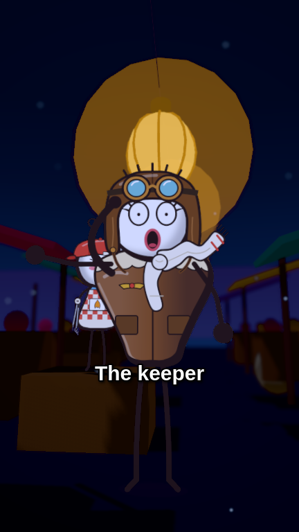
CAMwhole · 24 mm · rest 0.63 s
MOVEkeeper: point_out, omg
WORD"smiled" · shows kid, lantern_last
8 END · f 250 · 8.33 s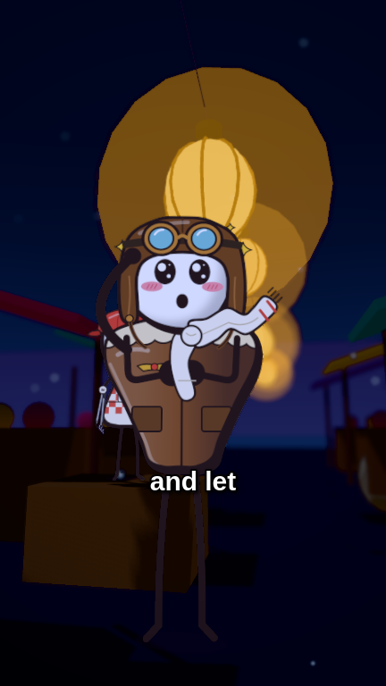
CAMthen 1.1 s move to whole
MOVEkeeper: clap, delight
WORD"smiled" · shows kid, lantern_last
9 START · f 284 · 9.47 s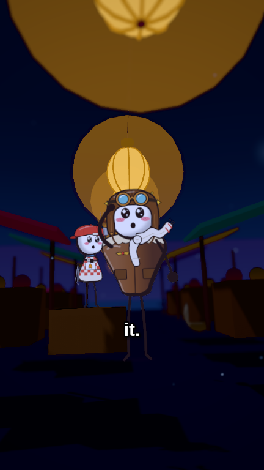
CAMwhole · 24 mm · rest 0.83 s
MOVEkeeper: stand, delight
WORD"it" · shows lantern_last, kid
9 END · f 308 · 10.27 sCAMlast frame
MOVEkeeper: stand, delight
WORD"it" · shows lantern_last, kid